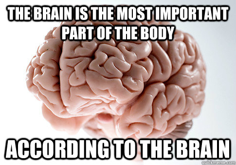
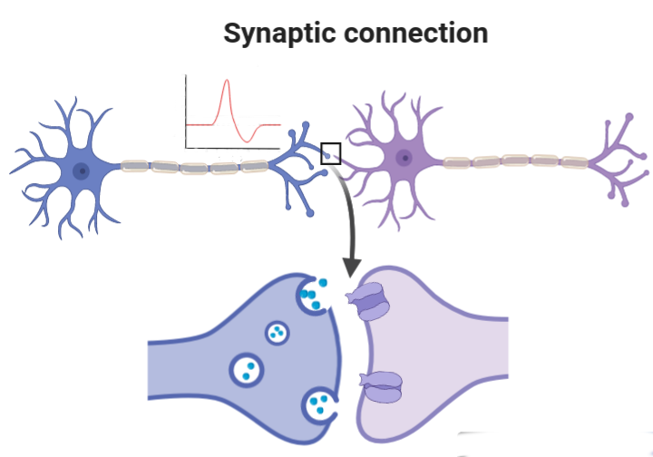

Sincronização de fase e metastabilidade em redes neurais
Pré-defesa de Mestrado
UFPR
Introdução
O que vou falar
- Caracterização da rede, sincronização de fase
- Discussão sobre metastabilidade
Outline
- Introdução
- Metodologia
- Resultados, discussões
- Conclusões
No final das contas, o objetivo é ajudar na compreensão do sistema nervoso.
Motivação - Sincronização de fase
- Fase: variável para indicar o status atual de uma oscilação.
- Sincronização: atividade ocorrendo simultâneamente
Sincronização de fase
Crucial para:
- Memória (Fell, 2011)
- Consciência (Gaillard, 2009)
- Percepção (Rodriguez, 2019)
Sincronização de fase
Disrupção associada a
- Epilepsia (Uhlhaas, 2006)
- Parkinson (Uhlhaas, 2006)
- Autismo (Uhlhaas, 2006)
Mecanismos teóricos
- Communication-through-coherence (Fries, 2005)
- Binding-by-synchrony (Singer, 1999)
Motivação - Metastabilidade
Regime em que os padrões de atividade de um sistema variam incessantemente
Tirado de (Ma, 2016)
Cérebro metastável
- Metastabilidade constitui a base para a dinâmica da atividade cortical (Bressler, 2016)
- Sequência de estados metastáveis representa o fluxo de pensamento (stream of thoughts) (Fingelkurts, 2008)
Metodologia
Redes neurais
Ingredientes básicos
- Neurônio
- Sinapse
- Topologia
Neurônio

Tirado de (Brown, 1999)
Spike

Tirado de https://commons.wikimedia.org/wiki/File:Action_Potential.gif
Modelagem
Equações de Hodgkin-Huxley
\[\begin{align} C_\mathrm{M} \dot{V} &= I - \overline{g}_{\mathrm{K}} n^4(V-E_{\mathrm{K}}) - \overline{g}_{\mathrm{Na}} m^3 h (V- E_{\mathrm{Na}}) - g_{\mathrm{L}} (V - E_{\mathrm{L}})\\ \dot{n} &= \alpha_n(V) (1-n) - n\beta_n(V) \\ \dot{m} &= \alpha_m(V)(1-m) - m\beta_m(V) \\ \dot{h} &= \alpha_h(V)(1-h) - h\beta_h(V) \end{align}\]Modelo de Huber-Braun
\[\begin{align}C_\mathrm{M} \dot{V}_i &= -I_{\mathrm{Na}} - I_{\mathrm{K}} - I_{\mathrm{l}} - I_{\mathrm{sd}} - I_{\mathrm{sr}} - I_{\mathrm{ext}}\\ \end{align}\]Influência da temperatura
\[\begin{align} \phi &= \phi_0^{(T-T_0)/\overline{T}_0} \\ \rho &= \rho_0^{(T-T_0)/\overline{T}_0} \end{align}\]
Sinapse
Química excitatória
\[ I_{i, \mathrm{ext}} = \varepsilon (V_i - E_\mathrm{syn}) \sum\limits_{j \in \Gamma_i} r_j(t). \]Topologia aleatória

Figura adaptada de Watts-Strogatz
Resumo da rede
- Neurônios bursting
- Sinapses químicas excitatórias
- Topologia aleatória
Medida de sincronização de fase
Tempos de disparo

IBI: inter-burst interval
Definição de fase
\[\theta_{i}(t) = 2\pi k_i + 2\pi \frac{t - t_{k,i}}{t_{k+1, i} - t_{k,i}}, \; (t_k < t < t_{k+1}) \]Parâmetro de ordem de Kuramoto
\[ R(t) = \frac{1}{N}\left|\sum\limits_{i=1}^N e^{j\theta_i(t)}\right| \]- $R(t) = 1 \rightarrow$ Sincronização de fase completa
- $R(t) = 0 \rightarrow$ Desincronização de fase
Variabilidades
Um neurônio
Rede

Temporal

Ensemble

Drift médio
Drift médio ($\Delta$)
$\Delta$ mede quanto, em média, os tempos de disparo relativos mudam com o tempo
- $\Delta = 0 \rightarrow$ Neurônios estão phase-locked
- $\Delta >0 \rightarrow$ Tempos relativos estão mudando
Análise de clustering
Agrupa neurônios com fases semelhantes
Transformação de fase
\[ \Phi(\theta) = \frac{|\mathrm{mod}(\theta,2\pi) - \pi|}{\pi} \]$\theta \in [0, 2\pi] \rightarrow \Phi \in [0, 1] $
Diferença de fases $\Phi$ se comporta bem!
Como calcular os clusters
- Inicializa o cluster com um neurônio.
- Calcula diferença entre fases do cluster e fases dos neurônios fora.
- Seleciona a menor e compara com um limiar $\Phi_\mathrm{th}$.
- $\Phi_\mathrm{th}$ -> quão parecidas são as fases
- Se estiver abaixo, colocar o neuronio no cluster e repetir.
$\Phi_\mathrm{th} = 0.1$

$\Phi_\mathrm{th} = 0.05$

Calculando taxa de mudança na composição de um cluster
$\mathcal{P}$: taxa de mudança na composição de um cluster.
Resultados
Parte 1: Sincronização de fase, variabilidade e promiscuidade
Variabilidade de Ensemble

$T = 38° C, \epsilon = 0.00084$
$T = 38° C, \epsilon = 0.008$

Parte 2: Metastabilidade

Escalas
- Espacial: granularidade dos nodos
- Topologica: quantidade de nodos
- Temporal: escala temporal
Exemplo 1:
Variabilidade no grau de sincronização da rede
Medida como $\sigma (R(t))$
Usada por (Lee and Frangou, 2017); (Alderson et al., 2020); (Shanahan, 2010); (Wildie and Shanahan, 2012); (Cabral et al., 2011); (Deco et al., 2017); (Kringelbach et al., 2015); (Váša et al., 2015)
Exemplo 2:
Metastabilidade levando à formação de clusters transientes
Medida como a taxa de mudança na composição de clusters
Exemplo 3:
Mudança nas diferenças de fases entre os nodos
Medida como $\sigma(R_{ij}(t))$


Conclusões
Parte 1
Caracterização do comportamento da rede,
Comportamento da rede e as variabilidades,
Importância da dinâmica individual,
Promiscuidade,
Parte 1 - Variabilidade e Metastabilidade
Metastabilidade ocorrendo numa rede sem clusterização e com neurõnios idênticos,
Variabilidade mede a assimetria dinâmica
Parte 2 - Metastabilidade
Definição de metastabilidade.
Importância de estudar várias escalas e as relações entre elas.
Ilustração numa rede relativamente simples.
Obrigado!
Sincronização de fase e metastabilidade em redes neurais
Pré-defesa de Mestrado
UFPR